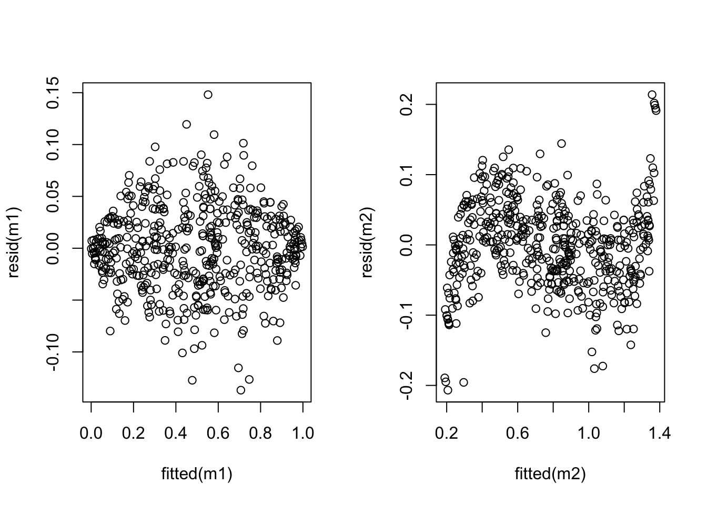
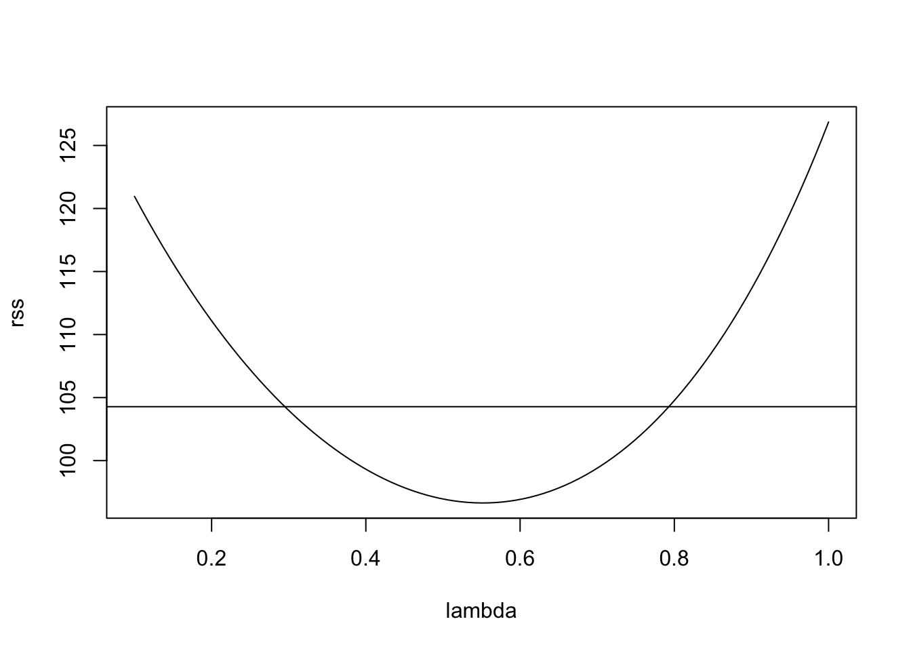

Section 11 Improving the Model Fit
The diagnostic plots introduced in section 9 can often reveal if the data do not fit the modelling assumptions. In cases where the assumptions are violated, sometimes a linear model can still be used if the data is transformed first.
11.1 Linearising the Mean
If the model mean is a non-linear function of the inputs, we can sometimes transform the variables to achieve a linear relationship. We list some examples of non-linear models which can be transformed to linear models:
| nonlinear model | transformation | linear Model |
|---|---|---|
| \(y \approx \beta_0 x^{\beta_1}\) | \(x'=\log(x)\), \(y'=\log(y)\) | \(y' \approx \log(\beta_0) + \beta_1 x'\) |
| \(y \approx \beta_0 e^{\beta_1 x}\) | \(y'=\log y\) | \(y' \approx \log \beta_0 +\beta_1 x\) |
| \(y \approx \beta_0+\beta_1\log x\) | \(x'=\log x\) | \(y \approx \beta_0+\beta_1 x'\) |
| \(y \approx \frac{x}{\beta_0 x-\beta_1}\) | \(x'=1/x\), \(y'=1/y\) | \(y' \approx \beta_0-\beta_1 x'\) |
In all such cases we also would need to check the residuals of the transformed models, to see whether linear regression can be used for the transformed model.
11.2 Stabilising the Variance
The assumption of constant variance is a basic requirement of regression analysis. A common reason for the violation of this assumption is for the response variable \(y\) to follow a distribution in which the variance depends on \(y\) or \(\mathbb{E}(y)\) and thus on \(x\).
Example 11.1 The error in our model \[\begin{equation*} Y = \beta_0 + \beta_1 x_1 + \beta_2 x_2 + \cdots + \beta_p x_p + \varepsilon = x^\top \beta + \varepsilon \end{equation*}\] is sometimes called additive error, since it is added to the model mean \(x^\top\beta\). Sometimes the error is instead given in percentages of the quantity of interest. In these cases we speak of multiplicative error. This can, for example, be modelled as \[\begin{equation*} Y = \bigl(\beta_0 + \beta_1 x_1 + \beta_2 x_2 + \cdots + \beta_p x_p\bigr) \exp(\varepsilon) = x^\top \beta \exp(\varepsilon). \end{equation*}\] For \(\varepsilon= 0\) we have \(\exp(0) = 1\) and thus \(Y = x^\top \beta\). Similarly, for small \(\varepsilon\) we have \(Y \approx x^\top \beta\), but the variance is now proportional to \((x^\top\beta)^2\) instead of being constant. Also, since the exponential is nonlinear we only have \(\mathbb{E}(Y) \approx x^\top\beta\) instead of strict equality.
Some commonly-used variance stabilising transformations are:
| variance | transformation |
|---|---|
| \(\sigma^2 = \text{constant}\) | no transformation |
| \(\sigma^2 \propto y\) | \(y' = \sqrt{y}\) |
| \(\sigma^2 \propto y^2\) | \(y' = \log y\) |
| \(\sigma^2 \propto y^3\) | \(y' = \frac{1}{\sqrt{y}}\) |
| \(\sigma^2 \propto y^4\) | \(y' = \frac{1}{y}\) |
| \(\sigma^2 \propto y(1-y)\) where \(y \in [0,1]\) | \(y' = \arcsin(\sqrt{y})\) |
Of course we do not have accurate knowledge of the relationship, but it can be diagnosed from the residual plots and transformations can be selected by experimenting with different choices. Any of these transformations will also affect the mean and we need to check the model fit for the transformed data, to see whether the transformed data can still reasonably be described by a linear model.
Example 11.2 The last transformation in the table above corresponds to the case of binomial sampling: If \(x = p\) and \(Y \sim B(n, p) / n\) then we have \(\mathbb{E}(Y) = n p / n = x\) and a linear model may be appropriate. But we also have \(\mathop{\mathrm{Var}}(Y) = p (1 - p) / n \propto \mathbb{E}(Y) \bigl( 1- \mathbb{E}(Y) \bigr)\), so the assumption of constant variance is violated.
We try to apply the transformation suggested in the table. The
function \(\arcsin\) is the inverse of the sine function. In R
this function is available as asin(). To get some intuition about
this transformation, we plot the function \(y \mapsto \arcsin(\sqrt{y})\):
We can see that the transformation is approximately linear for most of the interval, but has a steeper slope near the edges. The effect of this is to increase the size of fluctations for small and large \(y\)-values. We now consider residual plots for the original and transformed data, for a simulated dataset:
n <- 500
x <- runif(n, 0, 1)
y <- rbinom(n, 100, x) / 100
par(mfrow = c(1, 2))
m1 <- lm(y ~ x)
plot(fitted(m1), resid(m1))
y.prime <- asin(sqrt(y))
m2 <- lm(y.prime ~ x)
plot(fitted(m2), resid(m2))
The plot shows that the variance has indeed improved, while linearity has suffered (an S-shaped curve is now visible). Neither model is perfect and whether the transformation is beneficial or not depends on the particular circumstances.
Example 11.3 An electric utility company is interested in developing a model relating the peak hour demand (\(y\), measured in kW) to total energy usage during the month (\(x\), in kWh). A scatter plot of the data is shown below:
# data at https://teaching.seehuhn.de/2022/MATH3714/electric.dat
d <- read.table("data/electric.dat", header=FALSE)
plot(d$V1, d$V2,
xlab="energy usage [kWh]", ylab="energy demand [kW]")
m1 <- lm(V2 ~ ., data = d)
abline(m1)
A linear relationship looks plausible, but we can see that the spread of points around the regression line widens as energy usage increases. this is more clearly visible in a residual plot:

We try a transformation of the data to stabilise the variance. From the “wedge” shape on the left hand side of the plot, it is clear that the variance \(\sigma^2\) increases as \(y\) increases. Thus we can try transformations like \(y' = \log(y)\) or \(y' = \sqrt{y}\). Taking the logarithm for illustration, we get
m2 <- lm(log(V2) ~ ., data = d)
plot(d$V1, log(d$V2),
xlab="energy usage [kWh]", ylab="log-transformed y")
abline(m2)
plot(fitted(m2), resid(m2),
xlab = "fitted values", ylab = "residuals for log-transform")
abline(h = 0)
The spread of residuals now looks somewhat more reasonable.
11.3 The Power Transform
A family of transformations for the response variable \(y\) is given by the power transform. These transformations only apply to strictly positive data, i.e. \(y > 0\), and are defined by \[\begin{equation*} y^{(\lambda)} = \begin{cases} \frac{\displaystyle y^\lambda-1}{\displaystyle\lambda g^{\lambda-1}} & \mbox{if $\lambda\ne 0$} \\ g\log y & \mbox{if $\lambda=0$} \end{cases} \end{equation*}\] where \(g = (\prod_{i=1}^n y_i)^{1/n}\) is the geometric mean.
The geometric mean is a constant (it does not depend on \(i\)) and is not needed for the power transform, but it is usually included to make values for different \(\lambda\) more comparable. For \(\lambda = 1\) the transform is \(y' = y - 1\). This is a simple shift which has no effect on the fitted model, it just decreases the intercept by \(1\) and leaves the residuals unchanged. Thus, this case is that same as applying no transformation.
Using Taylor approximation on the numerator in the definition of \(y^{(\lambda)}\) we get \[\begin{equation*} y^\lambda = \exp\bigl( \log(y^\lambda) \bigr) = \exp\bigl( \lambda \log(y) \bigr) \approx 1 + \lambda\log(y) + O\Bigl(\bigl(\lambda\log(y)\bigr)^2\Bigr), \end{equation*}\] where the \(O(\cdots)\) stands for terms which are negligible as \(\lambda\) converges to \(0\). Thus the formula given for \(\lambda \neq 0\) converges to the case for \(\lambda = 0\) as \(\lambda\) converges to \(0\). This makes the transformation continuous as a function of \(\lambda\).
A heuristic rule to find a range of \(\lambda\) for which the power transform is appropriate is based on how the the residual sum of squares changes with \(\lambda\): Let \[\begin{equation*} r(\lambda) = \sum_{i=1}^n \bigl( y^{(\lambda)}_i - \hat y^{(\lambda)}_i \bigr)^2, \end{equation*}\] where \(\hat y^{(\lambda)}_i\) denotes the fitted value for the model using the transformed data \(y^{(\lambda)}_i\). It is easy to plot this function numerically. We want to choose \(\lambda\) close to where the function has its minimum. The heuristic rule is to consider all values of \(\lambda\) with \[\begin{equation} r(\lambda) \leq r(\lambda_\mathrm{min}) \Bigl( 1 + \frac{t_{n-p-1}(\alpha/2)^2}{n-p-1} \Bigr), \tag{11.1} \end{equation}\] where \(\lambda_\mathrm{min}\) is the value of \(\lambda\) where the residual sum of squares has its minimum and \(t_{n-p-1}(\alpha/2)\) is the \((1-\alpha/2)\)-quantile of the \(t(n-p-1)\)-distribution. One can show that this is an approximate \((1-\alpha)\) confidence interval for \(\lambda\). If we want to interpret the model, it is usually better to select a “simple” \(\lambda\), e.g. \(\lambda=0.5\) rather than using the “optimal” value \(\lambda_\mathrm{min}\).
Example 11.4 Continuing from example 11.3 above, we can try a power transform for the data. We start by plotting \(r(\lambda)\) as a function of \(\lambda\), together with the cutoff suggested by equation (11.1):
x <- d$V1
y <- d$V2
gm <- exp(mean(log(y))) # more stable way to compute geometric mean
lambda <- seq(0.1, 1, length.out = 101)
rss <- numeric(length(lambda))
for (i in seq_along(lambda)) {
li <- lambda[i]
y.prime <- (y^li - 1) / (li * gm^(li-1))
mi <- lm(y.prime ~ x)
rss[i] <- sum(resid(mi)^2)
}
plot(lambda, rss, type="l")
n <- nrow(d) # 53
p <- 1
cutoff <- min(rss) * (1 + qt(0.975, n - p - 1)^2 / (n - p - 1))
abline(h = cutoff)
This suggests the range of reasonable \(\lambda\) values to be
[1] 0.298 0.784The value \(\lambda = 1\) (no transformation) is not contained in the interval, suggesting that a transformation may be helpful. Choosing a “simple” value inside the interval and close to the minimum, we try \(\lambda = 0.5\). This leads to the following transformation: \[\begin{equation*} y' = 2\sqrt{g} (\sqrt{y}-1). \end{equation*}\] Up to the shift and scaling, this just takes the square root of the data.
y.prime <- sqrt(y)
plot(x, y.prime,
xlab="energy usage [kWh]", ylab="sqrt-transformed y")
m3 <- lm(y.prime ~ x)
abline(m3)
To see whether the variance of the residuals has improved, we consider a residual plot:
plot(fitted(m3), resid(m3),
xlab = "fitted values", ylab = "residuals for sqrt-transform")
abline(h = 0)
We see that the spread of the residuals has indeed improved, when compared to fitting the original data.
Summary
- We have seen different transformations which can be used to transform a nonlinear model into a linear one.
- We have discussed transformations which can stabilise the variance of the errors in the model.